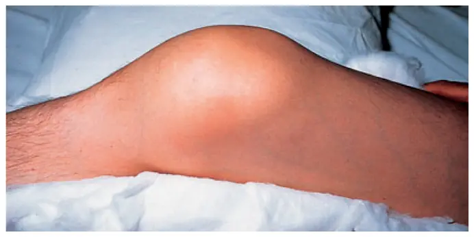
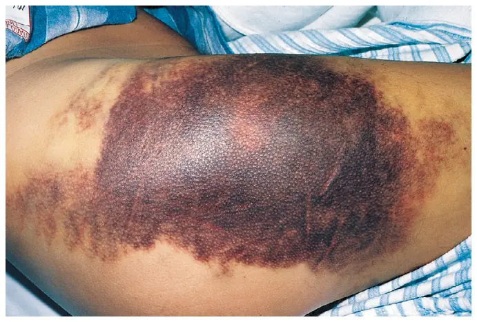

نسخه استخراجشده؛ ترجمه یا تأیید علمی انجام نشده است. وضعیت: captured
پسر ۹ سالهای را برای کشیدن دندان شیری آوردهاند. مادرش میگوید سال پیش پس از زمین خوردن، زانویش ورم کرد و داغ و دردناک شد، و داییاش «خونش بند نمیآید». پیش از هر کاری به چه فکر میکنی؟

این شرح حال تو را به هموفیلی میرساند: کمبود یا نقص مادرزادی یک فاکتور انعقادی.
ژن معیوب روی کروموزوم X است. بیمار تقریباً همیشه پسر است و زن معمولاً ناقل است. پسرِ مادر ناقل ۵۰٪ احتمال بیماری دارد. چون جهش تازه در این ژن زیاد رخ میدهد، سابقهی خانوادگی منفی هموفیلی را رد نمیکند.
اشتباه رایج: «سر جلسه خونش بند آمد، پس مشکلی ندارد.» در هموفیلی، هموستاز هنگام جراحی اغلب طبیعی به نظر میرسد و خونریزی جدی چند ساعت تا چند روز بعد شروع میشود.

مهارکننده آنتیبادی IgG علیه فاکتور VIII است که پس از دریافت مکرر فاکتور ساخته میشود؛ در ۲۰ تا ۳۰٪ هموفیلی A شدید. در low responder سطح آنتیبادی با فاکتور تازه بالا نمیرود؛ در high responder بالا میرود و درمان دشوارتر است.
نوع سؤال: ساخت کلمه · 8 خانه
حروف منبع: ر · و · ا · ز · ه · ت · م · ر